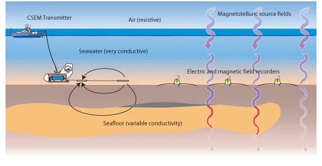

Geomagnetic Field
Formation of the Geomagnetic Field
The geomagnetic field is sustained by a self-exciting geodynamo:

Convection of electrically conducting liquid in the outer core, organized by Earth's rotation, generates currents that maintain the magnetic field against Ohmic decay.
Electromagnetic coupling with the outer core and gravitational coupling with the mantle influence the differential rotation of the inner core.
- Yang and Song (2023) inferred a near-zero differential rotation around 2009 and proposed an approximately 70-year oscillation. Wang et al. (2024) also found evidence of backtracking relative to the mantle.
- A reversal here means a change in the sign of rotation relative to the mantle; the inner core does not stop rotating in an inertial frame. This is distinct from a reversal of geomagnetic polarity.
- Similar multidecadal variations in geomagnetism and length of day suggest coupling between Earth's layers; they do not establish one universal period for all geomagnetic changes.
Properties

Geomagnetic elements
- Magnetic declination $D$
- Magnetic inclination $I$
- Total geomagnetic field $F$
- Vertical magnetic field strength $Z$
- Horizontal magnetic field strength $H$
- Horizontal X component (northward) $X$
- Horizontal Y component (eastward) $Y$
$$H=\sqrt{X^2+Y^2},\qquad F=\sqrt{H^2+Z^2},\qquad D=\operatorname{atan2}(Y,X),\qquad I=\operatorname{atan2}(Z,H)$$ Here $Z$ is positive downward, and $D$ is positive east of geographic north. When $H=0$, the declination $D$ is undefined. Field strengths $F,H,X,Y,Z$ are usually reported in $\mathrm{nT}$, while $D,I$ are angles. The scalar horizontal intensity $H$ must be distinguished from the magnetic field intensity vector $\mathbf{H}$ in $\mathrm{A\,m^{-1}}$.


- In a centered dipole approximation, $H$ is largest at the dipole equator and decreases toward zero at the dipole poles. The actual contour lines deviate from latitude circles because of dipole tilt and non-dipole contributions.
- The magnetic dip equator is defined by $I=0$, hence $Z=0$. For Earth's present polarity, $Z$ is generally positive in the northern magnetic hemisphere and negative in the southern magnetic hemisphere. In a dipole model, $|Z|$ increases toward the poles.
- The intensity is generally stronger in high latitudes than near the equator.
- The total field is unusually weak over South America and the South Atlantic. In this South Atlantic Anomaly (SAA), trapped radiation-belt particles reach lower altitudes and affect satellite instruments. A numerical field deficit requires a specified reference model, altitude, and epoch. See NASA's description of the SAA.
isoclinic lines (inclination $I$) 
isogonic lines (declination $D$) 
The geomagnetic field consists of three parts:
- Main field: Generated in the outer core, with both dipole and non-dipole components. It dominates the field at Earth's surface and changes slowly through secular variation.
- Crustal field: Produced by induced and remanent magnetization in the lithosphere. It causes local magnetic anomalies and is approximately steady over ordinary survey time scales.
- Disturbance field: Produced by currents in the ionosphere and magnetosphere, together with the currents they induce in the oceans and solid Earth. Its relative magnitude depends strongly on location and magnetic activity.
This source-based decomposition follows the NOAA World Magnetic Model description. Fixed percentages are only rough estimates, rather than universal bounds. 
Historical regional centers of the non-dipole field in the 1965 illustration below, with approximate central values quoted in the course notes:
Three positive centers:
- South Atlantic Magnetic Anomaly (SAT), central intensity 22000 nT
- Eurasian Magnetic Anomaly (EA), central intensity 20000 nT
- North American Magnetic Anomaly (NAM), central intensity 6000 nT
Two negative centers:
- North African Magnetic Anomaly (AF), with a central intensity of -18000 nT
- Oceania Magnetic Anomaly (AUS), with a central intensity of -12000 nT
Non-dipole magnetic field in 1965 
These historical center labels and signed values describe a non-dipole-field map, not the total field strength or a present-day global model. The positive SAT center must not be identified with the weak-total-field SAA. The original map source and the exact plotted component still need verification.
Magnetization of the rock:
- Induced magnetization: The magnetization of a geological body located in the lithosphere due to magnetization by the modern Earth's magnetic field.
- Remanent magnetization: The magnetization retained by rocks and minerals formed under specific conditions, magnetized by the Earth's magnetic field at that time, and after a long geological period.
Thermoremanent Magnetization
- Magnetic minerals can acquire remanence while cooling through their blocking temperatures in an ambient field. Thermal fluctuations allow magnetic moments to respond to the field at higher temperatures; cooling makes their relaxation times long enough to preserve the magnetization. Blocking temperatures depend on grain properties and cooling rate and need not equal the Curie temperature (approximately $580\,{}^\circ\mathrm{C}$ for magnetite). Hematite loses antiferromagnetic order near its Neel temperature, approximately $675$–$690\,{}^\circ\mathrm{C}$; see Schmidt et al. (2007). Examples of distinct blocking and ordering temperatures are discussed by Bowles et al. (2018).
 The sketch illustrates preserved past magnetization in a changed ambient field. Its illustrative age label should not be used to date a global geomagnetic polarity reversal.
The sketch illustrates preserved past magnetization in a changed ambient field. Its illustrative age label should not be used to date a global geomagnetic polarity reversal.
Seafloor magnetic band 
paleomagnetic stratigraphy 
Gauss's Spherical Harmonic Analysis
Scalar Potential and Gauss Coefficients
In a current-free region with uniform permeability $\mu_0$, $\mathbf{B}=-\mu_0\nabla w$ and $\nabla^2w=0$. Using Spherical Harmonics, the magnetic scalar potential can be written as $$w(r,\theta,\lambda)=\frac{R}{\mu_0}\sum_{n=1}^\infty\sum_{m=0}^n[(\frac{R}{r})^{n+1}(g_n^m\cos m\lambda+h_n^m\sin m\lambda)+(\frac{r}{R})^n(j_n^m\cos m\lambda+k_n^m\sin m\lambda)]P_n^m(\cos \theta)$$ Here $R$ is the reference Earth radius, $\theta$ is geocentric colatitude, and $\lambda$ is east longitude. $P_n^m$ are Schmidt quasi-normalized associated Legendre functions without the Condon-Shortley phase, so $P_1^0=\cos\theta$ and $P_1^1=\sin\theta$. This normalization differs from the unnormalized functions in the linked mathematical-physics section. For each nonzero real harmonic, $$\int_0^\pi\int_0^{2\pi}[P_n^m(\cos\theta)\cos m\lambda]^2\sin\theta\,\mathrm{d}\lambda\,\mathrm{d}\theta=\frac{4\pi}{2n+1},$$ with the same norm for the sine harmonics when $m\ge1$. The two radial powers belong to the potential: $r^{-(n+1)}$ for internal sources and $r^n$ for external sources. Differentiation gives field amplitudes proportional to $r^{-(n+2)}$ and $r^{n-1}$, respectively. The expansion excludes a magnetic-monopole term; an arbitrary constant in $w$ has no effect on the field.
The Gauss coefficients $g_n^m,h_n^m$ describe the internal field, while $j_n^m,k_n^m$ describe the external field. The sine coefficients $h_n^0,k_n^0$ are conventionally set to zero because $\sin0\lambda=0$.
At the surface $r=R$, we have $$w(R,\theta,\lambda)=\frac{R}{\mu_0}\sum_{n=1}^\infty\sum_{m=0}^n(p_n^m\cos m\lambda+q_n^m\sin m\lambda)P_n^m(\cos \theta)$$ where $$\left\{\begin{matrix} p_n^m= g_n^m+ j_n^m\\ q_n^m= h_n^m+ k_n^m \end{matrix}\right.$$ We can find that $$Z=\mu_0\frac{\partial w}{\partial r}|_{r=R}=-\sum_{n=1}^\infty\sum_{m=0}^n \{[(n+1)g_n^m-nj_n^m]\cos m\lambda+[(n+1)h_n^m-nk_n^m]\sin m\lambda\}P_n^m(\cos\theta)$$ So introduce two new coefficients: $$\left\{\begin{matrix} p_n^{'m}= (n+1)g_n^m-nj_n^m\\ q_n^{'m}= (n+1)h_n^m-nk_n^m \end{matrix}\right.$$ They can be solved from the measured vertical field $Z$: $$\left\{\begin{matrix} p_n^{'m}= -\frac{2n+1}{4\pi} \int_{0}^{\pi} \int_{0}^{2\pi} Z(R,\theta,\lambda)P_n^m(\cos\theta)\cos m\lambda \sin \theta \,\mathrm{d}\lambda\,\mathrm{d}\theta\\ q_n^{'m}= -\frac{2n+1}{4\pi} \int_{0}^{\pi} \int_{0}^{2\pi} Z(R,\theta,\lambda)P_n^m(\cos\theta)\sin m\lambda \sin \theta \,\mathrm{d}\lambda\,\mathrm{d}\theta \end{matrix}\right.$$ We can apply the method into the horizontal magnetic field strength: $$X=\frac{\mu_0}{r}\frac{\partial w}{\partial \theta}|_{r=R}=\sum_{n=1}^\infty\sum_{m=0}^n (p_n^m\cos m\lambda+q_n^m\sin m\lambda)\frac{\mathrm{d}P_n^m(\cos\theta)}{\mathrm{d}\theta} $$ $$Y=-\frac{\mu_0}{r\sin\theta}\frac{\partial w}{\partial \lambda}|_{r=R}=\sum_{n=1}^\infty\sum_{m=0}^n (p_n^m\sin m\lambda-q_n^m\cos m\lambda)\frac{m}{\sin\theta}P_n^m(\cos\theta) $$ Therefore, $$\left\{\begin{matrix} p_n^{m}= \frac{2n+1}{4\pi m} \int_{0}^{\pi} \int_{0}^{2\pi} Y(R,\theta,\lambda)P_n^m(\cos\theta)\sin m\lambda \sin^2 \theta \,\mathrm{d}\lambda\,\mathrm{d}\theta\\ q_n^{m}= -\frac{2n+1}{4\pi m} \int_{0}^{\pi} \int_{0}^{2\pi} Y(R,\theta,\lambda)P_n^m(\cos\theta)\cos m\lambda \sin^2 \theta \,\mathrm{d}\lambda\,\mathrm{d}\theta \end{matrix}\right.$$ This $Y$ inversion applies only to $m\ge1$. Zonal harmonics have $Y=0$, so their coefficients $p_n^0$ must instead be obtained from $X$. Let $$\overline{X}(\theta)=\frac{1}{2\pi}\int_0^{2\pi}X(R,\theta,\lambda)\,\mathrm{d}\lambda.$$ Derivative orthogonality of the zonal Legendre polynomials gives $$\boxed{p_n^0=\frac{2n+1}{2n(n+1)}\int_0^\pi\overline{X}(\theta)\frac{\mathrm{d}P_n^0(\cos\theta)}{\mathrm{d}\theta}\sin\theta\,\mathrm{d}\theta},\qquad q_n^0\equiv0.$$ The vertical inversion yields $p_n^{'0}$, rather than $p_n^0$; $Z$ alone cannot separate internal and external sources at one radius. Once both horizontal and vertical coefficients are known, $$\begin{aligned} g_n^m&=\frac{np_n^m+p_n^{'m}}{2n+1},&j_n^m&=\frac{(n+1)p_n^m-p_n^{'m}}{2n+1},\\ h_n^m&=\frac{nq_n^m+q_n^{'m}}{2n+1},&k_n^m&=\frac{(n+1)q_n^m-q_n^{'m}}{2n+1}. \end{aligned}$$ These integral formulas assume global coverage. Discrete observations are normally fitted by weighted least squares. The internal main field dominates the total field under ordinary conditions, but this does not imply an inequality for every individual coefficient or for the time-varying field.
The IGRF coefficients describe the internal main-field coefficients $g_n^m,h_n^m$; they do not supply the external coefficients $j_n^m,k_n^m$.
Dipole Field ($n=1$)
$n=1$ is the dipole field and is the dominant large-scale part of Earth's main field. A numerical percentage depends on the epoch and on how the field contribution is measured. $$w_1=\frac{R}{\mu_0}(\frac{R}{r})^2[g_1^0\cos\theta+g_1^1\sin\theta\cos\lambda+h_1^1\sin\theta\sin\lambda]$$
At the surface $r=R$, $$\left\{\begin{matrix} X= -g_1^0\sin\theta+(g_1^1\cos\lambda+h_1^1\sin\lambda)\cos\theta\\ Y= g_1^1\sin\lambda-h_1^1\cos\lambda\\ Z=-2g_1^0\cos\theta-2(g_1^1\cos\lambda+h_1^1\sin\lambda)\sin\theta \end{matrix}\right.$$ If geomagnetic axis coincides with geographic axis, then $$Y=0,Z|_{\theta=\frac{\pi}{2}}=0$$ Therefore, $$g_1^1=0,h_1^1=0$$ For the aligned dipole with Earth's present polarity ($g_1^0<0$), let $M=-4\pi R^3g_1^0/\mu_0>0$ be the magnitude of its magnetic moment. Then $$\left\{\begin{matrix} X=H= -g_1^0\sin\theta=\frac{\mu_0M}{4\pi R^3}\sin\theta\\ Y= 0\\ Z=-2g_1^0\cos\theta=\frac{\mu_0M}{2\pi R^3}\cos\theta \end{matrix}\right.$$
For the present main field, the axial coefficient dominates in magnitude: $$|g_1^0|\gg|g_1^1|,|h_1^1|.$$
Eccentric Dipole Model
The model considers that the centre of the magnetic dipole does not coincide with Earth's centre. Let its displacement be $(x_0,y_0,z_0)$, with magnitude $r_0$, and let $(x',y',z')=(x-x_0,y-y_0,z-z_0)$. The $z$ axis points north, and $\varphi$ is the angle between the displacement and the observation position vector. For $r_0/r\ll1$, the expansion below retains terms through first order in the displacement.
Under this circumstance, we have $$\begin{align*}w'&=\frac{1}{\mu_0}(\frac{R}{r'})^3(g_1^0z'+g_1^1x'+h_1^1y')\\&=\frac{1}{\mu_0}(\frac{R}{r'})^3[(g_1^0z+g_1^1x+h_1^1y)-(g_1^0z_0+g_1^1x_0+h_1^1y_0)]\\&=\frac{1}{\mu_0}(\frac{R}{r})^3[(g_1^0z+g_1^1x+h_1^1y)-(g_1^0z_0+g_1^1x_0+h_1^1y_0)](\frac{r}{(r_0^2+r^2-2r_0r\cos\varphi)^{1/2}})^3\\&=w_1+w_2'+w_{\ge3}\end{align*}$$ where $$w_2'=\frac{1}{\mu_0}(\frac{R}{r})^3[(-g_1^0z_0-g_1^1x_0-h_1^1y_0)+3r_0\cos\varphi(g_1^0\cos\theta+g_1^1\sin\theta\cos\lambda+h_1^1\sin\theta\sin\lambda)]$$ Here $w_{\ge3}$ contains degree $n\ge3$ terms, which are second and higher order in $r_0/r$ relative to the centered dipole potential. Combining with the law of cosines: $$r_0\cos\varphi=z_0\cos\theta+x_0\sin\theta\cos\lambda+y_0\sin\theta\sin\lambda$$ We have $$\begin{align*}w_2'&=\frac{R}{\mu_0}(\frac{R}{r})^3[g_2^{'0}P_2^0(\cos\theta)+g_2^{'1}\cos\lambda P_2^1(\cos\theta)\\&+h_2^{'1}\sin\lambda P_2^1(\cos\theta)+g_2^{'2}\cos2\lambda P_2^2(\cos\theta)+h_2^{'2}\sin2\lambda P_2^2(\cos\theta)]\end{align*}$$ where $$\left\{\begin{matrix} g_2^{'0}=\frac{2}{R}g_1^0z_0-\frac{1}{R}g_1^1x_0-\frac{1}{R}h_1^1y_0\\ g_2^{'1}=\frac{\sqrt{3}}{R}(g_1^0x_0+g_1^1z_0)\\ g_2^{'2}=\frac{\sqrt{3}}{R}(g_1^1x_0-h_1^1y_0)\\ h_2^{'1}=\frac{\sqrt{3}}{R}(g_1^0y_0+h_1^1z_0)\\ h_2^{'2}=\frac{\sqrt{3}}{R}(g_1^1y_0+h_1^1x_0)\\ \end{matrix}\right.$$
Time-Varying Magnetic Field
Introduction to Time-Variation
Variations in the Earth's magnetic field fall into two basic categories:
- Quiet variations: continuous, periodic, and gradual changes
- Disturbance variations: sporadic, transient, and complex changes
To evaluate the variation, we use the following empirical indices:
- Daily Magnetic Activity Level $C,C_i$: $C$ only has three values $0,1,2$ and $C_i$ has $21$ values $0.0-2.0$.
- $K,K_p$: A disturbance level is assigned every $3$ hours, resulting in eight $K$ values per day. Because background magnetic fields and disturbance responses vary with latitude and location, $K$ from different stations cannot be directly compared. So we introduce $K_p$:
$$ K \rightarrow \text{Standardization} \rightarrow K_s \rightarrow \text{Combine multiple standard stations} \rightarrow K_p $$
- $K$ is a local, quasi-logarithmic index with integer levels $0$–$9$, computed after removing the regular daily variation. $K_p$ is the planetary index with 28 levels, conventionally expressed in thirds between $0$ and $9$.
- $A_k,A_p$: $K$ is not linear, so we introduce the linear index $a_k,a_p$, corresponding respectively to $K,K_p$. $A_k,A_p$ are the daily averages of $a_k,a_p$.
- $C_p$: $A_p$ is the average equivalent amplitude, and $C_p$ is a classification derived by further compressing the global daily disturbance intensity.
- $u,u_1$: Statistics of global magnetic disturbances on monthly and annual scales
- $AU,AL,AE$: Among multiple auroral-zone stations:
$$ AU=\max(\Delta H), AL=\min(\Delta H), AE=AU-AL $$ Here $\Delta H$ is measured relative to station baselines. $AU$ and $AL$ are the upper and lower envelopes of auroral-zone horizontal disturbances, rather than absolute magnetic-field strengths. Definitions of $K_p$ and its derived indices are provided by GFZ.
The variations in the Earth's magnetic field are significantly influenced by solar activity.
The relationship between the geomagnetic index $u$ and the sunspot number $R$. 
Annual variation of geomagnetic activity 
The following figure shows the geomagnetic diurnal variation. The horizontal axis represents local time.  Solar quiet daily variation ($S_q$):
Solar quiet daily variation ($S_q$):
- Average variation ranges from a few $\mathrm{nT}$ to tens of $\mathrm{nT}$.
- A cycle of 24 hours.
- Greater variation during the day, smaller variation at night.
- The amplitude depends on season, solar activity, latitude, and longitude; a summer maximum and winter minimum are common in some regions but are not a universal seasonal ordering.
- The northward component can become small and reverse its daily pattern near the $S_q$ current foci, often near magnetic latitudes of $\pm30^\circ$. The exact latitude varies, and the eastward component need not vanish there.
- The equatorial electrojet enhances the northward and horizontal daily variation within a few degrees of the dip equator. The horizontal variation can approach $200\,\mathrm{nT}$ in favorable conditions. Its vertical-field signature changes sign across the electrojet and is not a uniform enhancement over $\pm15^\circ$. CHAMP observations found a current-density full width at half maximum of about $4^\circ$ in latitude.
Variation of geomagnetic activity with the solar rotation cycle (Chree curve):  In the figure, enhanced-activity days are aligned at the reference day $n$ and averaged. The secondary peak near $n+27$ reflects recurrence over the approximately 27-day solar rotation as seen from Earth; it is not the 11-year solar activity cycle.
In the figure, enhanced-activity days are aligned at the reference day $n$ and averaged. The secondary peak near $n+27$ reflects recurrence over the approximately 27-day solar rotation as seen from Earth; it is not the 11-year solar activity cycle.
Principle of Periodic Superposition
If we have two types of cyclical changes and random, accidental changes: $$f(t)=f_0(t)+A(t)+A_1\sin(\frac{2\pi}{T_1}t+\varphi_1)+A_2\sin(\frac{2\pi}{T_2}t+\varphi_2)$$ where
- $f(t)$ is the observed geomagnetic field as a function of time.
- $f_0(t)$ is the background (basic) geomagnetic field as a function of time.
- $A(t)$ is the random (accidental) variation as a function of time.
Sample at the same phase of the $T_1$ cycle, $t_k=kT_1+t_i$, and form $$\overline{f}=\frac{1}{N}\sum_{k=0}^{N-1}f(t_k).$$ The background $f_0$ should be approximately steady over the averaging interval, or its secular trend should first be removed. Define $$\alpha=\frac{2\pi t_i}{T_2}+\varphi_2,\qquad \beta=\pi\frac{T_1}{T_2}.$$ For $\sin\beta\ne0$, the finite trigonometric sum is $$\sum_{k=0}^{N-1}\sin(\alpha+2k\beta)=\frac{\sin N\beta}{\sin\beta}\sin[\alpha+(N-1)\beta].$$ Therefore $$\overline{f}=\overline{f_0}+\overline{A}+A_1\sin\left(\frac{2\pi t_i}{T_1}+\varphi_1\right)+\frac{A_2}{N}\frac{\sin N\beta}{\sin\beta}\sin[\alpha+(N-1)\beta],$$ where $\overline{A}=N^{-1}\sum_k A(t_k)$. If the sampled random term has zero mean and sufficiently weak correlations for its sample mean to converge to zero, and $T_1/T_2\notin\mathbb{Z}$, then $$\boxed{\delta f_i=\lim_{N\to\infty}(\overline{f}-\overline{f_0})=A_1\sin\left(\frac{2\pi t_i}{T_1}+\varphi_1\right)}.$$ If $T_1/T_2$ is an integer, the $T_2$ signal is also sampled at a fixed phase and survives the averaging. For a ratio close to an integer, a long averaging window is needed; the residual amplitude is bounded by $|A_2|/(N|\sin\beta|)$.
This method improves the signal-to-noise ratio of a periodic signal with a roughly known period; it does not remove correlated disturbances or background drift automatically.
Analysis of $S_q$
In actual measurements, we usually use Fourier Series to analyze the period: $$ f(t)=\frac{a_0}{2} +\sum_{m=1}^{\infty} \left( a_m\cos mt+b_m\sin mt \right)$$ where $$ a_m=\frac1\pi\int_0^{2\pi} f(t)\cos mt\,\mathrm{d}t, b_m=\frac1\pi\int_0^{2\pi} f(t)\sin mt\,\mathrm{d}t$$ Then $$\begin{align*} \delta f(t)& = f(t)-\frac{a_0}{2} = \sum_{m=1}^{\infty} \left( a_m\cos mt+b_m\sin mt \right)\\&= \sum_{m=1}^{\infty} A_m\sin(mt+\phi_m)\end{align*}$$ Here, we let $t=2\pi$ correspond to $24$ hours. So $m=1,2,3,4$ respectively correspond to $T=24\,\mathrm{h},12\,\mathrm{h},8\,\mathrm{h},6\,\mathrm{h}$.
In this way we can analyze the importance of every period wave. For a smooth quiet-day curve, the first four harmonics often provide a useful approximation; the required truncation should be checked against the data. 
Spatial variation can be analyzed with spherical harmonics. The following formulas apply at $r=R$ to an idealized pattern described in angular local time $t$, with $1\le m\le n$. At fixed universal time, local-time angle and longitude differ only by a phase shift. An arbitrary evolving spatial field would instead use longitude harmonics with coefficients that depend separately on time.
Internal time-varying field (mainly the induced Earth response for $S_q$):
$$ \left\{ \begin{aligned} \delta X_i &= \sum_{n,m} \frac{\mathrm{d}P_n^m(\cos\theta)}{\mathrm{d}\theta} \left( g_n^m\cos mt+h_n^m\sin mt \right),\\[2mm] \delta Y_i &= \sum_{n,m} \frac{mP_n^m(\cos\theta)}{\sin\theta} \left( g_n^m\sin mt-h_n^m\cos mt \right),\\[2mm] \delta Z_i &= -\sum_{n,m} (n+1) \left( g_n^m\cos mt+h_n^m\sin mt \right) P_n^m(\cos\theta). \end{aligned} \right. $$
External geomagnetic field: $$ \left\{ \begin{aligned} \delta X_e &= \sum_{n,m} \frac{\mathrm{d}P_n^m(\cos\theta)}{\mathrm{d}\theta} \left( j_n^m\cos mt+k_n^m\sin mt \right),\\[2mm] \delta Y_e &= \sum_{n,m} \frac{mP_n^m(\cos\theta)}{\sin\theta} \left( j_n^m\sin mt-k_n^m\cos mt \right),\\[2mm] \delta Z_e &= \sum_{n,m} n \left( j_n^m\cos mt+k_n^m\sin mt \right) P_n^m(\cos\theta). \end{aligned} \right. $$
Ionosphere and Atmospheric Dynamo Theory
Solar radiation ionizes neutral atoms and molecules in the upper atmosphere, producing free electrons and positive ions, thereby forming the ionosphere, which possesses significant electrical conductivity. For example: $$ \mathrm O + h\nu \rightarrow \mathrm O^+ + e^-, \qquad \mathrm{N_2}+h\nu \rightarrow \mathrm{N_2^+}+e^-$$ The altitude dependence of electron concentration $n_e$ defines the D, E, and F regions. Their boundaries and peak heights depend on local time and solar conditions: the D region is roughly $60$–$95\,\mathrm{km}$, the E region about $90$–$150\,\mathrm{km}$ with a typical daytime peak near $110$–$120\,\mathrm{km}$, and the F region lies above about $150\,\mathrm{km}$, often with F1 and F2 layers. The F2 peak commonly occurs around $200$–$400\,\mathrm{km}$. These are altitude ranges, not three fixed peak heights. 
Solar heating excites atmospheric tides and neutral winds. Collisions between neutrals and charged particles couple these winds to the ionospheric plasma. In the Earth-fixed frame, the effective field driving conduction is $$\mathbf{E}'=\mathbf{E}+\mathbf{v}\times\mathbf{B},\qquad \mathbf{j}=\overleftrightarrow{\sigma}\cdot\mathbf{E}',$$ where $\mathbf{v}$ is the neutral wind, $\mathbf{E}$ includes the polarization field, and $\overleftrightarrow{\sigma}$ is the conductivity tensor. In particular, perpendicular to $\mathbf{B}$, $$\mathbf{j}_\perp=\sigma_P\mathbf{E}'_\perp+\sigma_H\hat{b}\times\mathbf{E}'_\perp,\qquad \hat{b}=\frac{\mathbf{B}}{|\mathbf{B}|},$$ with Pedersen and Hall conductivities $\sigma_P,\sigma_H$. The electrostatic field adjusts to satisfy current continuity; the total field cannot generally be set equal to $\mathbf{v}\times\mathbf{B}$.
The solar-driven currents, mainly in the E-region dynamo layer, produce the external $S_q$ field and an induced response in the Earth. Lunar atmospheric tides also drive a smaller geomagnetic daily variation, conventionally denoted $L$, which is distinct from $S_q$.
For ionospheric currents, if we restrict them to a two-dimensional surface current on a thin spherical shell of known altitude, we can derive analytical relationships. 
Let $R$ be Earth's radius and $r=R+h$ the fixed radius of the current shell. Use $\rho$ for the variable radial coordinate, so that $\rho=R$ is the ground and $\rho=r$ is the ionosphere. Assume a quasi-static, divergence-free horizontal sheet current, with permeability $\mu_0$ on both sides. The inversion gives an equivalent current system producing the observed external $S_q$ field; it does not uniquely recover the full three-dimensional current system. Any external contribution from magnetospheric currents must also be excluded or modeled before interpreting the result as ionospheric currents.
The scalar-potential convention in Scalar Potential and Gauss Coefficients is $$ \mathbf{H}=-\nabla w,\qquad \mathbf{B}=-\mu_0\nabla w. $$ First derive the spatial relation using longitude $\lambda$. In the local-time representation of $S_q$, $t$ is an angular local solar time ($2\pi=24\,\mathrm{h}$), rather than time in seconds. At fixed universal time, $t$ differs from $\lambda$ by a constant, so the same spatial derivation applies after replacing $\lambda$ with $t$ and absorbing the phase shift into the coefficients.
The equivalent current function $I_e$ is defined by $$ \mathbf{K}=-\hat{r}\times\nabla_s I_e, \qquad \nabla_s=\hat{\theta}\frac{1}{r}\frac{\partial}{\partial\theta} +\hat{\lambda}\frac{1}{r\sin\theta}\frac{\partial}{\partial\lambda}, $$ where $\mathbf{K}$ is the height-integrated current density in $\mathrm{A\,m^{-1}}$. Thus $$ K_\theta=\frac{1}{r\sin\theta}\frac{\partial I_e}{\partial\lambda}, \qquad K_\lambda=-\frac{1}{r}\frac{\partial I_e}{\partial\theta}. $$ $K_\theta$ is southward and $K_\lambda$ is eastward. The current follows contours of $I_e$, and the difference between two contours gives the signed current crossing a curve between them. Therefore $I_e$ has units of amperes; it is not a local current density. This sign convention determines the minus sign in the inversion formula.
From the coefficients defined in Scalar Potential and Gauss Coefficients, $$p_n^m=g_n^m+j_n^m,\qquad p_n^{'m}=(n+1)g_n^m-nj_n^m,$$ and similarly for $q_n^m,q_n^{'m}$. Solving these equations gives $$ j_n^m=\frac{(n+1)p_n^m-p_n^{'m}}{2n+1}, \qquad k_n^m=\frac{(n+1)q_n^m-q_n^{'m}}{2n+1}. $$ The ionospheric inversion uses these external coefficients, with the internal contribution from induced Earth currents separated out.
Define $$F_n^m(\theta,\lambda)=(j_n^m\cos m\lambda+k_n^m\sin m\lambda)P_n^m(\cos\theta).$$ For the field generated by the shell alone, the potential is regular inside and decays at infinity outside. The corresponding solutions of Laplace's equation are $$w_{nm}^-(\rho)=\frac{R}{\mu_0}\left(\frac{\rho}{R}\right)^n F_n^m,\qquad w_{nm}^+(\rho)=b_n\left(\frac{r}{\rho}\right)^{n+1}F_n^m,$$ where $-$ and $+$ denote the inner and outer sides. Since $\nabla\cdot\mathbf{B}=0$, the normal magnetic field is continuous across the current sheet: $$\left.\frac{\partial w_{nm}^-}{\partial\rho}\right|_{\rho=r}=\left.\frac{\partial w_{nm}^+}{\partial\rho}\right|_{\rho=r}.$$ Hence, equating the harmonic coefficients, $$\frac{n}{r}\frac{R}{\mu_0}\left(\frac{r}{R}\right)^n=-\frac{n+1}{r}b_n,\qquad b_n=-\frac{n}{n+1}\frac{R}{\mu_0}\left(\frac{r}{R}\right)^n.$$ At the shell, this means $$w_{nm}^+(r)=-\frac{n}{n+1}w_{nm}^-(r),\qquad w_{nm}^+(r)-w_{nm}^-(r)=-\frac{2n+1}{n+1}w_{nm}^-(r).$$ The same ionospheric source is external relative to the ground, but internal relative to points above the shell; this explains the two different radial powers.
Ampere's boundary condition, with $\hat{r}$ pointing outward, is $$\hat{r}\times(\mathbf{H}^+-\mathbf{H}^-)=\mathbf{K}.$$ Substituting $\mathbf{H}=-\nabla w$ gives $$\mathbf{K}=-\hat{r}\times\nabla_s(w^+-w^-).$$ Comparing this with the definition of $I_e$, we obtain $$I_e=w^+(r)-w^-(r)+C.$$ The additive constant $C$ does not affect the current and may be set to zero. Summing the harmonics and using the angular local-time coordinate gives the stated formula: $$\boxed{I_e(t,\theta)=-\frac{R}{\mu_0}\sum_{n=1}^{\infty}\sum_{m=1}^{n}\frac{2n+1}{n+1}\left(\frac{r}{R}\right)^n(j_n^m\cos mt+k_n^m\sin mt)P_n^m(\cos\theta)}$$
The factor $(r/R)^n$ continues the ground potential upward to the current shell, while $(2n+1)/(n+1)$ comes from the potential jump fixed by normal-field continuity. In SI units, $R,r$ are in metres and $j_n^m,k_n^m$ are in teslas, so $Rj_n^m/\mu_0$ has units of amperes. The sum starts at $m=1$ here because it describes the nonzero daily harmonics; a general spatial current function can also include zonal terms with $m=0$.
Magnetic Storm
A magnetic storm is a large-scale geomagnetic disturbance caused by enhanced solar-wind energy input to the magnetosphere. Coronal mass ejections and high-speed solar-wind streams are common drivers; a solar flare by itself is not a sufficient explanation of a storm.
- $D_{CF}$: The Chapman-Ferraro field from magnetopause currents. Increased solar-wind dynamic pressure compresses the magnetosphere and usually gives a positive low-latitude horizontal-field perturbation, often seen at storm commencement.
- $D_R$: The disturbance from the enhanced westward ring current, usually giving a negative low-latitude horizontal-field perturbation during the storm main phase.
The traditional schematic decomposition is $\Delta H_{\mathrm{storm}}\approx D_{CF}+D_R$. Tail currents, other current systems, and currents induced in the Earth also contribute. $D_{st}$ is an hourly index derived from low-latitude horizontal disturbances after removing the main-field baseline and $S_q$ and normalizing to the dipole equator. Thus $D_{st}$ is not defined as an exact sum of only two source fields.
Conductivity Model
Electromagnetic Induction in a Spherical Model
Consider a spherically symmetric Earth with conductivity $\sigma(r)$ and spatially constant absolute permeability $\mu$. The surrounding air has permeability $\mu_0$; define $\mu_r=\mu/\mu_0$. Use complex amplitudes with time dependence $e^{i\omega t}$ and neglect displacement current in the conducting Earth ($\sigma\gg\omega\varepsilon$). The sign of the imaginary terms is consequently opposite to the $e^{-i\omega t}$ convention in Waves in Good Conductors.
In the current-free region between the Earth and the external source currents, $$\mathbf{H}=-\nabla U,\qquad \mathbf{B}=\mu_0\mathbf{H},\qquad \nabla^2U=0.$$ For one degree-$n$ spherical harmonic $Y_n^m(\theta,\lambda)$, the radial solutions in Spherical Harmonics give $$U_n=R\left[e_n\left(\frac{r}{R}\right)^n+i_n\left(\frac{r}{R}\right)^{-n-1}\right]Y_n^m.$$ The order $m$ is suppressed in $e_n,i_n$. These coefficients are external and induced magnetic-field-intensity amplitudes in $\mathrm{A\,m^{-1}}$, unlike the flux-density Gauss coefficients used earlier. The symbol $i$ without a subscript is the imaginary unit. Thus $$\begin{aligned} H_r&=-\left[ne_n\left(\frac{r}{R}\right)^{n-1}-(n+1)i_n\left(\frac{r}{R}\right)^{-n-2}\right]Y_n^m,\\ H_\theta&=-\left[e_n\left(\frac{r}{R}\right)^{n-1}+i_n\left(\frac{r}{R}\right)^{-n-2}\right]\frac{\partial Y_n^m}{\partial\theta},\\ H_\lambda&=-\left[e_n\left(\frac{r}{R}\right)^{n-1}+i_n\left(\frac{r}{R}\right)^{-n-2}\right]\frac{1}{\sin\theta}\frac{\partial Y_n^m}{\partial\lambda}. \end{aligned}$$
Inside the Earth, choose a divergence-free toroidal vector potential, $$\mathbf{A}=F_n(r)(\mathbf{r}\times\nabla Y_n^m),\qquad \mathbf{B}=\nabla\times\mathbf{A},\qquad \mathbf{E}=-i\omega\mathbf{A}.$$ For this mode, Maxwell's equations give $$\nabla^2\mathbf{A}-i\omega\mu\sigma(r)\mathbf{A}=0,$$ or equivalently $$\frac{\mathrm{d}^2F_n}{\mathrm{d}r^2}+\frac{2}{r}\frac{\mathrm{d}F_n}{\mathrm{d}r}-\left[\frac{n(n+1)}{r^2}+i\omega\mu\sigma(r)\right]F_n=0.$$ For a homogeneous conducting solid sphere, define $$\kappa^2=i\omega\mu\sigma,\qquad \operatorname{Re}\kappa>0.$$ The solution regular at the center is $$F_n(r)=C_n r^{-1/2}I_{n+1/2}(\kappa r),$$ where $I_\nu$ is a modified Bessel function, as introduced in Cylindrical Coordinates → Bessel Functions. In a homogeneous spherical shell, both $r^{-1/2}I_{n+1/2}(\kappa r)$ and $r^{-1/2}K_{n+1/2}(\kappa r)$ are generally needed. For a layered sphere, match the fields at every interface; for a general $\sigma(r)$, solve the radial equation rather than substituting a constant-$\sigma$ Bessel solution.
At $r=R$, in the absence of an imposed surface current, the normal component of $\mathbf{B}$ and the tangential components of $\mathbf{H}$ are continuous. Since the interior field has $B_r=-n(n+1)F_nY_n^m/r$, these conditions give $$\begin{aligned} ne_n-(n+1)i_n&=\frac{n(n+1)}{\mu_0R}F_n(R),\\ e_n+i_n&=\frac{1}{\mu R}\left.\frac{\mathrm{d}(rF_n)}{\mathrm{d}r}\right|_{r=R}. \end{aligned}$$ Define the dimensionless logarithmic derivative $$L_n=\frac{\left.\mathrm{d}(rF_n)/\mathrm{d}r\right|_{r=R}}{F_n(R)}=1+\frac{R}{F_n(R)}\left.\frac{\mathrm{d}F_n}{\mathrm{d}r}\right|_{r=R}.$$ Eliminating the interior amplitude gives $$\boxed{Q_n(\omega)=\frac{i_n}{e_n}=\frac{n}{n+1}\frac{L_n-(n+1)\mu_r}{L_n+n\mu_r}}.$$ For the usual nonmagnetic approximation $\mu=\mu_0$, this reduces to $$Q_n(\omega)=\frac{n}{n+1}\frac{L_n-(n+1)}{L_n+n}.$$ The response depends on conductivity, frequency, permeability, and geometry. In the nonmagnetic case, the low-frequency limit is $Q_n\to0$; a perfectly shielding sphere has $Q_n\to n/(n+1)$.
Electromagnetic Induction in a Plane Model
Use $z$ positive downward, with a horizontal interface at $z=d$. The air above it is insulating with permeability $\mu_0$; the conducting half-space below it has constant $\sigma,\mu$. Retain the $e^{i\omega t}$ convention and $\mu_r=\mu/\mu_0$ from Electromagnetic Induction in a Spherical Model.
For a horizontal Fourier mode labeled by $m,n$, let $$V_{mn}=e^{i(k_xx+k_yy)},\qquad \lambda=\sqrt{k_x^2+k_y^2}>0,$$ where $k_x,k_y,\lambda$ are spatial wavenumbers in $\mathrm{m^{-1}}$. Here $\lambda$ is a wavenumber, rather than the longitude used in the spherical model. The real sine and cosine modes follow by taking linear combinations.
In the source-free air region, the external and induced potentials are $$U_{mn}=\left(e_{mn}e^{-\lambda z}+i_{mn}e^{\lambda z}\right)V_{mn},\qquad \mathbf{H}=-\nabla U_{mn}.$$ Unlike the spherical coefficients above, $e_{mn},i_{mn}$ here are scalar-potential amplitudes in amperes. Differentiation gives $$\begin{aligned} H_x&=-\left(e_{mn}e^{-\lambda z}+i_{mn}e^{\lambda z}\right)\frac{\partial V_{mn}}{\partial x},\\ H_y&=-\left(e_{mn}e^{-\lambda z}+i_{mn}e^{\lambda z}\right)\frac{\partial V_{mn}}{\partial y},\\ H_z&=\lambda\left(e_{mn}e^{-\lambda z}-i_{mn}e^{\lambda z}\right)V_{mn}. \end{aligned}$$
Define the vertical decay constant $$q=\sqrt{\lambda^2+i\omega\mu\sigma},\qquad \operatorname{Re}q>0.$$ The interior vector potential and magnetic flux density can be written as $$\mathbf{A}=C_{mn}e^{-qz}(\nabla V_{mn}\times\hat{e}_z),\qquad \mathbf{B}=\nabla\times\mathbf{A}.$$ At $z=d$, continuity of tangential $\mathbf{H}$ and normal $\mathbf{B}$ gives, respectively, $$\begin{aligned} \mu\left(e_{mn}e^{-\lambda d}+i_{mn}e^{\lambda d}\right)&=C_{mn}q e^{-qd},\\ e_{mn}e^{-\lambda d}-i_{mn}e^{\lambda d}&=\frac{C_{mn}\lambda}{\mu_0}e^{-qd}. \end{aligned}$$ Solving for the response coefficients, $$\boxed{\frac{i_{mn}}{e_{mn}}=e^{-2\lambda d}\frac{q-\mu_r\lambda}{q+\mu_r\lambda}},\qquad \frac{C_{mn}}{e_{mn}}=\frac{2\mu e^{(q-\lambda)d}}{q+\mu_r\lambda}.$$ Both $q$ and $\mu_r\lambda$ have units of $\mathrm{m^{-1}}$. Setting $d=0$ places the coordinate origin at the interface. For $\mu=\mu_0$ and $\omega\to0$, the induced-potential ratio tends to zero.
Magnetotelluric Method (MT) and GDS
The MT method records natural variations of horizontal electric and magnetic fields at the ground to infer the electrical structure of the Earth. The source field induces telluric currents; no local transmitter is required.
For a vertically incident plane wave in a homogeneous conducting half-space, use $z$ positive downward and time dependence $e^{i\omega t}$. The scalar impedance for the polarization $(E_x,H_y)$ is $$Z_{\mathrm{MT}}=\frac{E_x}{H_y}=\sqrt{\frac{i\omega\mu}{\sigma}},$$ with the square-root branch giving a field that decays with depth. $E_x$ is in $\mathrm{V\,m^{-1}}$ and $H_y$ in $\mathrm{A\,m^{-1}}$, so $Z_{\mathrm{MT}}$ has units of ohms. Define $$\rho_a=\frac{|Z_{\mathrm{MT}}|^2}{\mu_0\omega}.$$ In a nonmagnetic homogeneous half-space ($\mu=\mu_0$), $\rho_a=1/\sigma$ and the impedance phase is $45^\circ$. For a general two- or three-dimensional Earth, the horizontal electric and magnetic fields are related by an impedance tensor rather than one scalar ratio.
Geomagnetic depth sounding (GDS) uses magnetic-field variations to investigate electrical structure. For the particular finite-wavelength mode $V=e^{i\lambda x}$ in Electromagnetic Induction in a Plane Model, with $\mu=\mu_0$, the ground response is $$R_{\mathrm{GDS}}=\frac{H_z}{H_x}=\frac{i\lambda}{q},\qquad q=\sqrt{\lambda^2+i\omega\mu_0\sigma}.$$ This is a mode-specific relation, not a general definition of the GDS response. In the horizontally uniform, vertically incident plane-wave model used for one-dimensional MT, $\lambda=0$ and $H_z=0$. For lateral conductivity variations, the usual vertical magnetic transfer function, or tipper, is $$H_z(\omega)=T_x(\omega)H_x(\omega)+T_y(\omega)H_y(\omega),$$ where $T_x,T_y$ are dimensionless complex coefficients. A nonzero vertical field can also reflect a spatially nonuniform source; interpreting it as a conductivity anomaly requires the source approximation to be checked. See Xu et al. (2023) for the tipper convention and its plane-wave assumptions.
Skin depth (derived in Waves in Good Conductors): $$\delta=\sqrt{\frac{2}{\omega \mu \sigma}}=\sqrt{\frac{\rho}{\pi \mu f}}\approx503.3\sqrt{\frac{\rho}{f}}$$ The numerical factor $503.3$ assumes $\mu=\mu_0$, $\rho$ in $\Omega\,\mathrm{m}$, $f$ in $\mathrm{Hz}$, and $\delta$ in metres. This skin depth is the amplitude e-folding length in a uniform good conductor; it is not an exact investigation depth in a layered Earth. Higher frequencies generally sample shallower structure.
Advantages and interpretation conditions:
- No local transmitter or source power supply is required.
- Broadband MT and AMT together can span roughly $10^{-4}$–$10^4\,\mathrm{Hz}$, corresponding to periods of $10^4$–$10^{-4}\,\mathrm{s}$. The useful survey band depends on the instruments, source strength, and target depth.
- Magnetic activity can strengthen some long-period signals, but storms are not required; rapidly varying or spatially nonuniform sources can also complicate processing.
- Resistive cover allows relatively deep electromagnetic penetration, while conductive layers often produce strong responses. Deep conductors can nevertheless be masked by conductive overburden.
- A distant source is approximated as a plane wave over the survey area. This is an interpretation assumption, not a property guaranteed for every source or every survey.
The Effect of Seawater on the Magnetic Field
Thin Seawater Layer
As a simple shielding model, approximate seawater by an infinite horizontal sheet at $z=0$, with $z$ positive downward and uniform sheet conductance $$S=\sigma_w h,$$ where $\sigma_w$ is the water conductivity and $h$ its thickness; $S$ is in siemens. Both surrounding regions are insulating with permeability $\mu_0$, and the inducing source is above the sheet. Use $e^{i\omega t}$ and neglect displacement current. The thin-sheet approximation requires $$h\ll\delta_w=\sqrt{\frac{2}{\omega\mu_0\sigma_w}},\qquad \lambda h\ll1.$$
For a horizontal mode $e^{i\lambda x}$ with $\lambda>0$, write $$\begin{aligned} U_{\mathrm{above}}&=\left(u_e e^{-\lambda z}+u_i e^{\lambda z}\right)e^{i\lambda x},\\ U_{\mathrm{below}}&=u_t e^{-\lambda z}e^{i\lambda x}. \end{aligned}$$ Let $U_e=u_e e^{-\lambda z}e^{i\lambda x}$ be the source potential extrapolated below the sheet in its absence, and $U=U_{\mathrm{below}}$ the total potential there. With $\mathbf{H}=-\nabla U$, normal-field continuity gives $u_t=u_e-u_i$. The tangential-field jump, Faraday's law, and the sheet Ohm's law give $$K_y=2i\lambda u_i=S E_y=-\omega\mu_0S u_t.$$ Consequently, $$\boxed{U=f(\omega,\lambda)U_e,\qquad f(\omega,\lambda)=\frac{1}{1+i\omega\tau_\lambda},\qquad \tau_\lambda=\frac{\mu_0S}{2\lambda}}.$$ The response $f$ is dimensionless and $\tau_\lambda$ is a decay time in seconds; the same sheet time constant is derived in Haus and Melcher, Chapter 10, Problem 10.5.1.
For $\omega\tau_\lambda\ll1$, $f\approx1-i\omega\tau_\lambda$ and shielding is weak. For $\omega\tau_\lambda\gg1$, $|f|\approx1/(\omega\tau_\lambda)$ and the transmitted field lags by nearly $90^\circ$, provided the thin-sheet conditions still hold. Each horizontal wavenumber has its own response; this expression does not apply directly to the $\lambda=0$ MT plane-wave model.
Real oceans require the underlying Earth's conductivity, variable water depth, and coastline geometry. The formula above isolates shielding by an ideal sheet; it is not a universal ocean correction. More general ocean-Earth coupling is treated by Sun and Egbert (2012).
Oceanic Edge Effect
For a resistive landmass adjacent to conductive seawater, a common conductivity contrast is $$\sigma_{\text{land}}\ll\sigma_{\text{ocean}}$$ This contrast allows seawater to carry a greater share of the induced current. Current redistribution near the coast can produce a pronounced vertical magnetic-field response. Its amplitude and phase depend on period, water depth, coastal geometry, and the conductivity beneath the ocean and land.
CSEM

Marine controlled-source electromagnetics (CSEM) uses an artificial transmitter. In the illustrated configuration, a horizontal electric dipole is towed close to the seafloor and electric and magnetic fields are recorded by seabed receivers. The surface ship powers and tows the source; it is not the submerged radiating dipole. Marine MT uses seabed recordings of natural fields. CSEM can be sensitive to thin resistive layers, including some hydrocarbon-bearing reservoirs; a resistive anomaly alone does not identify hydrocarbons. See the Scripps Marine EM Laboratory explanation of the diagram.
Conductive seawater attenuates electromagnetic fields. Placing a source and receivers near the seabed can improve sensitivity to the subsurface compared with some surface configurations. The response difference between models with and without a resistive layer depends on frequency, water depth, source-receiver geometry, and target properties; it cannot be assumed universally small. In shallow water, fields traveling through the air can also contribute strongly and reduce relative sensitivity to the subsurface, so the air-water interface must be included in the model.
Electrical Conductivity Anomaly
Use magnetic flux-density components in a north-east-down coordinate system, all in the same units. For approximately in-phase variations described by real coefficients $A,B$, the empirical relation is $$\Delta B_z=A\Delta B_x+B\Delta B_y.$$ The coefficients are dimensionless. The declination angle $D$ defined earlier is not an eastward field component. In a coordinate system aligned with the background horizontal field, its small transverse perturbation is approximately $H_0\Delta D$, with $\Delta D$ in radians and $H_0$ the background horizontal flux-density magnitude.
The Wiese vector in this real-plane representation is $$\mathbf{V}_W=(A,B,0).$$ The variations lie in the plane $A\Delta B_x+B\Delta B_y-\Delta B_z=0$. Its downward unit normal is $$\hat{n}=\frac{(-A,-B,1)}{\sqrt{1+A^2+B^2}}.$$ The Parkinson vector is the projection of this unit normal onto the horizontal plane: $$\mathbf{V}_P=\frac{(-A,-B,0)}{\sqrt{1+A^2+B^2}}=-\frac{\mathbf{V}_W}{\sqrt{1+A^2+B^2}}.$$ These geometrical definitions are described by Gregori and Lanzerotti (1980).
In frequency-domain processing, use the complex transfer function from Magnetotelluric Method (MT) and GDS: $$B_z(\omega)=T_x(\omega)B_x(\omega)+T_y(\omega)B_y(\omega).$$ Modern induction arrows are usually drawn separately for real and imaginary parts. In the Parkinson sign convention, $$\mathbf{a}_{P,\mathrm{Re}}=(-\operatorname{Re}T_x,-\operatorname{Re}T_y,0),\qquad \mathbf{a}_{P,\mathrm{Im}}=(-\operatorname{Im}T_x,-\operatorname{Im}T_y,0).$$ The Wiese convention reverses both arrow directions. These arrow lengths are unnormalized transfer-function magnitudes, not the unit-normal projection above. Parkinson real-part arrows commonly point toward anomalous current concentrations, whereas Wiese real-part arrows point away; imaginary arrows and complex three-dimensional structures require more detailed interpretation. A general complex transfer function does not define one fixed real plane of instantaneous variations.
Electrical Conductivity Distribution within the Earth's Interior
For an effective medium made of thin, isotropic layers, we define: Longitudinal Resistivity $\rho_t$: the average resistivity along the bedding direction (parallel to layering). Transverse Resistivity $\rho_n$: the average resistivity in the direction perpendicular to bedding. (For this layered-medium model, $\rho_n\ge\rho_t$ and $\lambda\ge1$, with equality for identical layer resistivities. The inequality is not a general law for every form of rock anisotropy.) Anisotropy Coefficient $\lambda =\sqrt{\frac{\rho_n}{\rho_t}}$ mean macroscopic resistivity / equivalent isotropic resistivity $\rho_m=\sqrt{\rho_n \rho_t}$
For layers with resistivities $\rho_i$, thicknesses $h_i$, and total thickness $d=\sum_i h_i$, $$\rho_t=\frac{d}{\sum_i h_i/\rho_i},\qquad \rho_n=\frac{\sum_i h_i\rho_i}{d}.$$ The longitudinal and transverse resistivities are the thickness-weighted harmonic and arithmetic means. The geometric mean $\rho_m$ is a useful effective parameter, rather than a replacement for the full anisotropic resistivity tensor in every geometry.
The following picture illustrates approximate resistivity ranges (in $\Omega\,\mathrm{m}$) for a continental crust-mantle model. Both layer depths and resistivities vary between regions. 
Conduction mechanisms in crustal materials:
- Electronic conduction: Important in connected metallic minerals and graphite; bulk conductivity also depends on whether the conducting phase forms a connected network.
- Semiconducting conduction: Occurs in some sulfides and oxides and depends on temperature and mineral composition.
- Electrolytic conduction: Motion of dissolved ions in connected pore water and fractures; commonly the dominant mechanism in fluid-bearing rocks.
- Surface conduction: Associated with charged mineral-fluid interfaces, especially clay-rich rocks. Solid-state ionic conduction may also contribute, particularly at high temperatures; dry quartz, mica, and calcite are generally resistive.
Based on the different resistivity of various rocks, we can use electrical exploration to detect the variety of rocks. However, due to the overlapping of the scope of resistivity of various rocks, electrical exploration has its limitations.
Electrical and Electromagnetic Exploration Methods
Direct Current (DC) Resistivity Method
In the ideal model, a point electrode injects current $I$ into a homogeneous, isotropic half-space of resistivity $\rho$, with an insulating air boundary and a remote return electrode. Current spreads over hemispherical surfaces: 
The figure shows a finite source-return pair, corresponding to the superposition used below. Its bottom legend is reversed: the red curves with arrows are current-flow lines, and the blue dashed curves are equipotential lines.
$$j=\frac{I}{2\pi r^2}$$ $$E=\rho j=\frac{\rho I}{2\pi r^2}$$ $$U(r_M)=-\int_{\infty}^{r_M}E(r)\,\mathrm{d}r=-\int_{\infty}^{r_M}\frac{\rho I}{2\pi r^2}\,\mathrm{d}r=\frac{\rho I}{2\pi r_M}$$ For current injection at $A$ and withdrawal at $B$, superposition gives $$U_M=U_M^A+U_M^B=\frac{\rho I}{2\pi |AM|}+\frac{-\rho I}{2\pi |BM|}=\frac{\rho I}{2\pi}(\frac{1}{|AM|}-\frac{1}{|BM|})$$ $$U_{MN}=U_M-U_N=\frac{\rho I}{2\pi}(\frac{1}{|AM|}+\frac{1}{|BN|}-\frac{1}{|BM|}-\frac{1}{|AN|})$$ Let Geometric Factor $$K=\frac{2\pi}{\frac{1}{|AM|}+\frac{1}{|BN|}-\frac{1}{|BM|}-\frac{1}{|AN|}}$$ For a homogeneous half-space, $\rho=KU_{MN}/I$. For an inhomogeneous or anisotropic Earth, the same operation defines the apparent resistivity: $$\boxed{\rho_a=K\frac{U_{MN}}{I}}.$$ Recovering the true subsurface resistivity distribution requires inversion. The voltage sign must follow the electrode ordering used in $K$; a negative signed geometric factor is possible when the potential electrodes are reversed. See USGS's description of ERT measurements.
Wenner
 The electrode order is $A,C,D,B$ with equal adjacent spacings $a$, and $V=U_C-U_D$. $$\rho_a=\frac{2\pi a V}{I}$$ The Wenner array generally gives a strong voltage signal and is useful for detecting vertical changes in resistivity, such as horizontal layering. Its resolution still depends on electrode spacing, survey coverage, and the inversion.
The electrode order is $A,C,D,B$ with equal adjacent spacings $a$, and $V=U_C-U_D$. $$\rho_a=\frac{2\pi a V}{I}$$ The Wenner array generally gives a strong voltage signal and is useful for detecting vertical changes in resistivity, such as horizontal layering. Its resolution still depends on electrode spacing, survey coverage, and the inversion.
This method can be used to find the layering inside the Earth and detect its depth.
Schlumberger
 Here $L=AB$ and $a=CD$ are full electrode separations, the two pairs have the same center, and $V=U_C-U_D$. $$\rho_a=\frac{\pi (L^2-a^2) V}{4Ia}$$
Here $L=AB$ and $a=CD$ are full electrode separations, the two pairs have the same center, and $V=U_C-U_D$. $$\rho_a=\frac{\pi (L^2-a^2) V}{4Ia}$$
Usually $a\ll L$. Increasing $L$ while keeping the potential electrodes fixed over part of the sounding makes this array efficient for vertical electrical sounding. Resolution and noise performance depend on survey geometry, the subsurface structure, and data quality.
This method can be utilized for analyzing stratigraphic sequences.
Dipole-Dipole
 In the illustrated collinear geometry, $AB=CD=a$, $L$ is the distance between the dipole centers, and $V=U_C-U_D$; the potential-electrode order is $D,C$ from left to right. $$\rho_a=\frac{\pi V L(L^2-a^2)}{Ia^2}$$ For $L\gg a$, the geometric factor is $K\sim\pi L^3/a^2$. In a homogeneous medium with fixed $I$ and $a$, the voltage consequently decays as $L^{-3}$; the true resistivity does not grow as $L^3$. This array is sensitive to lateral resistivity changes and is useful for locating steep structures, but large dipole separations reduce the signal-to-noise ratio.
In the illustrated collinear geometry, $AB=CD=a$, $L$ is the distance between the dipole centers, and $V=U_C-U_D$; the potential-electrode order is $D,C$ from left to right. $$\rho_a=\frac{\pi V L(L^2-a^2)}{Ia^2}$$ For $L\gg a$, the geometric factor is $K\sim\pi L^3/a^2$. In a homogeneous medium with fixed $I$ and $a$, the voltage consequently decays as $L^{-3}$; the true resistivity does not grow as $L^3$. This array is sensitive to lateral resistivity changes and is useful for locating steep structures, but large dipole separations reduce the signal-to-noise ratio.
For the common spacing convention $BD=na$, $L=(n+1)a$ and $K=\pi a n(n+1)(n+2)$, with the voltage polarity used in the figure. Mineralized zones and faults may be detected through their resistivity contrast with the surrounding rocks.
Multiple Electrode
An array of many installed electrodes is connected to a switching unit, which selects successive current and potential pairs. Multiple configurations and spacings provide a set of apparent-resistivity measurements for two- or three-dimensional electrical resistivity tomography. The installed electrodes do not all inject current simultaneously in a standard four-electrode measurement.
Transient Electromagnetic Method (TEM)

The Transient Electromagnetic Method (TEM) uses a controlled time-varying transmitter current, commonly with a rapid turn-off. The changing primary magnetic field induces subsurface eddy currents. After turn-off, their decay produces a secondary field, measured as a magnetic field or an induced receiver voltage proportional to its time derivative.
 This transmitter-receiver sketch illustrates controlled-source electromagnetic induction. Some airborne TEM systems use a large transmitter loop on the aircraft and a towed receiver, with the geometry depending on the instrument.
This transmitter-receiver sketch illustrates controlled-source electromagnetic induction. Some airborne TEM systems use a large transmitter loop on the aircraft and a towed receiver, with the geometry depending on the instrument.
- A slowly decaying response may indicate a conductive body, such as connected sulfides, clay-rich material, or saline groundwater.
- A rapidly decaying or weak response may indicate relatively resistive material. Decay also depends on body size, depth, geometry, and coupling; conductivity alone does not identify an ore body or groundwater.
Advantages:
- Sensitivity to Conductive Targets: TEM is particularly sensitive to conductive bodies such as connected massive sulfides. Spatial resolution depends on target depth, geometry, survey design, and noise.
- No Galvanic Contact: Loop-source TEM does not require grounded electrodes, which is useful where electrode contact is poor, such as dry sand or permafrost.
- Depth Sensitivity: Later time windows generally emphasize deeper or more slowly decaying current systems. Investigation depth also depends on conductivity, transmitter moment, geometry, and noise.
Self Potential
Self-potential (SP) surveys measure naturally occurring voltage differences relative to a reference electrode, without injecting survey current. Nonpolarizing electrodes help reduce electrode-generated offsets. SP does not independently measure resistivity; conductivity affects the observed voltages, but interpreting them also requires a model of the natural source currents.
- Electrochemical potentials: Associated with redox reactions, including current systems around some mineralized bodies.
- Streaming potentials: Associated with fluid motion through charged pore surfaces during groundwater flow.
- Diffusion potentials: Associated with ionic concentration gradients and different ionic mobilities.
 The gradient method measures voltage differences between successive nearby stations; the fixed-base method measures each station relative to a common reference.
The gradient method measures voltage differences between successive nearby stations; the fixed-base method measures each station relative to a common reference.
SP measurements can help map groundwater-flow changes associated with pumping. Estimating a pumping influence radius requires hydrogeological constraints and an electrokinetic model; a voltage anomaly alone does not determine it uniquely. See Rizzo et al. (2004) for pumping experiments and their interpretation. 
Comments
Questions, corrections, and reading notes are welcome here.
Comments load on the published website.